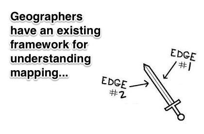
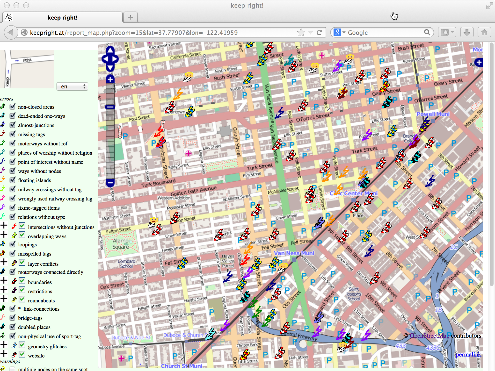
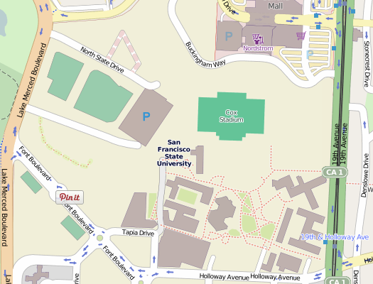
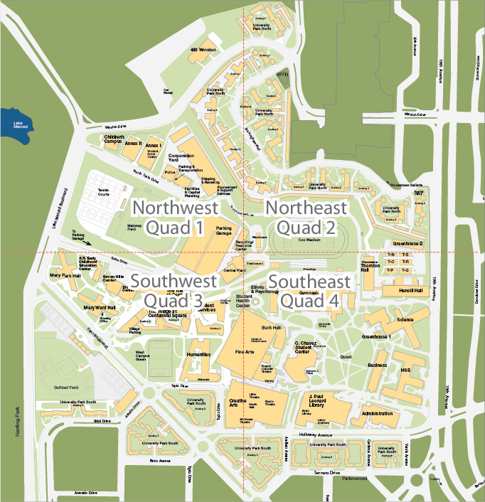

Teaching mapping to geographers
And who are these geographers, anyway?
Why talk specifically about teaching OSM to Geographers?

How do you explain OSM to geographers?

OSM is a data project
...not a map
...not a GIS
Our data model is... peculiar

QA tools

TIGER as a teachable moment
Hands-on Experience: Our Approach at San Francisco State University
Start with a place we have in common
No fancy editing tools
Ask them to ground truth
Introduce them to the community
Encourage them to go further...
Dog-food the data!
Results

Student reactions
“I have been mapping and digitizing professionally with ArcGIS for nearly 5 years. This is the first time I have heard of and used OpenStreetMap and it is awesome!”
"Overall, I found a blank space on the map and was able to start filling it, which provided a surprising sense of ownership around this work and this newly mapped place."
“I have set goals to make the habit of mapping areas under natural or human disasters.”
“It has been very cool to see how the map of SFSU on OSM has changed in the past week since starting this project.”
“The first add I made was pinpointing the designated smoking area near the Mary Park residence halls”
“I deleted a Patelco Station because it no longer exists"
“One of the difficulties I encountered was a problem I can assume happens in OSM often. You have an idea, you plan to do the field work for it, but someone beats you to it!”
Comments from OSMers!
“JOSM all the way. iD is an entry level / newbie tool.”
"Name is the name only."
"Thank you for your good changeset comments."
"By the way, in one note you mention a 'roof piece' - you can use building=roof if you want to tag a roof piece with no building underneath it. No pressure though ;)"
The Diary Controversy
"I'm really not at all convinced that our diary pages are an appropriate place to be using as a coursework submission system for your students."
Future / Next Steps

Discussion / Conclusion
We improved the map
We brought some diversity to OSM
We remain challenged
...with how to reconcile OSM with other standard approaches to mapping...
...with how to teach all of OSM to students with a range of skills and backgrounds...
...with how to introduce newbies to the community...
To be continued?
& Thanks also to you! @mizmay @mappingmashups
Presentation made with Big